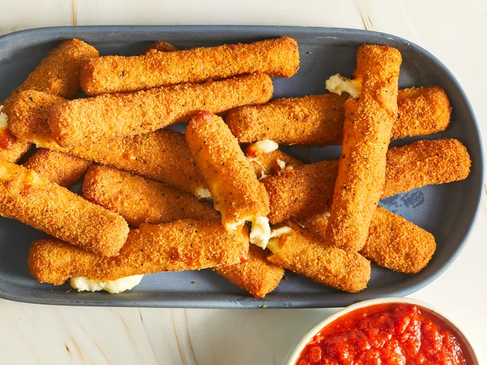

Fried Mozzarella Cheese Sticks

Description
Mozzarella sticks are very easy to make at home. They're deep-fried until
golden and crispy on the outside, with melted gooey cheese on the inside.
They're so good and take just minutes to fry! Try dipping them in a
marinara sauce!
Ingredients
- 2 large eggs, beaten
- ¼ cup water
- 1 ½ cups Italian seasoned bread crumbs
- ½ teaspoon garlic salt
- ⅔ cup all-purpose flour
- ⅓ cup cornstarch
- 2 cups oil for frying, or as needed
- 1 (16 ounce) package mozzarella cheese sticks
Directions
-
Gather all ingredients.
-
Whisk water and eggs together in a small bowl. Mix bread crumbs and
garlic salt together in a medium bowl. Blend flour and cornstarch
together in a third bowl.

-
Heat oil to 365 degrees F (185 degrees C) in a large, heavy saucepan.
-
Dredge a mozzarella stick in flour; shake off excess. Dip into egg
mixture. Lift up so excess egg drips back in the bowl. Press into bread
crumbs to coat. Place breaded mozzarella stick on a plate or wire rack.
Repeat with remaining mozzarella sticks.
-
Use a spider spoon or a pair of tongs to lower 3 to 4 mozzarella sticks
into the hot oil. Fry until golden brown, about 30 seconds. Remove from
heat and drain on paper towels. Repeat to fry remaining mozzarella
sticks.

-
Serve hot and enjoy!